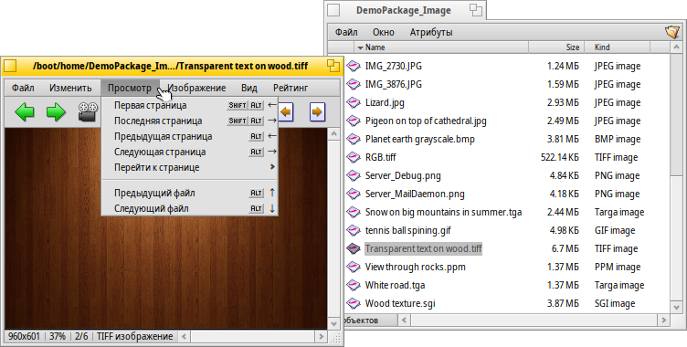

Русский
Русский Català
Català Deutsch
Deutsch English
English Español
Español Français
Français Italiano
Italiano Magyar
Magyar Polski
Polski Português
Português Português (Brazil)
Português (Brazil) Română
Română Slovenčina
Slovenčina Suomi
Suomi Svenska
Svenska 中文 ［中文］
中文 ［中文］ Українська
Українська 日本語
日本語 Просмотр изображений (ShowImage)
Просмотр изображений (ShowImage)
| Расположение в Deskbar: | Отсутствует в меню Deskbar, обычно запускается по двойному щелчку мыши по файлу. | |
| Расположение в Tracker: | /boot/system/apps/ShowImage | |
| Настройки хранятся по адресу: | ~/config/settings/ShowImage_settings |
Приложение Просмотр изображений (ShowImage) позволяет просматривать изображения всех форматов, для которых существуют трансляторы обеспечивающие поддержку. Новые форматы начнут автоматически распознаваться с того момента, как только транслятор будет добавлен в систему. Так произошло, например, с векторным форматом для иконок Haiku, с изображениями в формате WonderBrush и изображениями в формате WebP.
Просмотр изображений (ShowImage) также позволяет произвести простое редактирование изображения, а именно: обрезать, развернуть, зеркально отобразить и сохранить в другой формат.
 Отображение
Отображение

В меню первые два пункта позволяют запустить всех изображений в папке (или в окне результата поиска) и установить в диапазоне от 2 до 20 секунд.
Следующие команды применяются к отображаемому изображению (без изменения размеров окна):
- отобразить изображение оригинального размера.
- подогнать изображение под размеры окна.
и - увеличить или уменьшить изображение с шагом 10% от оригинального размера. Увеличить и уменьшать также можно при помощи колёсика мыши; если изображение не умещается в окно, то для его прокрутки нажмите левую кнопку мыши и тащите.
Следующие две настройки применяются не только к отображаемому изображению, но и к следующим:
- включить быстрый сглаживающий фильтр.
- подогнать под размеры окна, маленькие изображения будут растянуты до размеров окна.
Следующий пункт меню с опцией - отобразить название файла изображения в нижней части.
Последний пункт, - включить/отключить отображение панели управления:

Рассмотрим иконки на панели и их функционал слева направо: предыдущее изображение, следующее изображение, запустить слайдшоу (в полноэкранном режиме), режим выделения, оригинальный размер, подогнать под размеры окна, увеличить, уменьшить.
Большинство наиболее часто используемых команд доступны в контекстном меню, которое вызывается правым щелчком мыши в любой области изображения. Очень удобно при использовании полноэкранного режима.
Просмотр

После того, как вы открыли изображение вы можете просмотреть все изображения находящиеся в этой же папке (или в окне результата поиска) при помощи клавиш ↑/↓ и ←/→. Вы можете видеть процесс перемещения от изображения к изображению в окне Tracker.
Есть быстрый способ открыть папку, в которой находится изображение, и даже перейти к её родительской папке. Этот способ заключается в использовании ниспадающей навигации, как в Tracker. Щёлкните левой кнопкой мыши по информационной области, которая находится слева снизу и отображает разрешение и формат текущего изображения.
Рассмотрим меню , которое содержит ряд команд для просмотра специфичных форматов. Некоторые форматы изображений, например TIFF, могут содержать несколько страниц в одном файле. Такие команды как и позволяют переключаться между этими страницами.
Редактирование

Меню предлагает несколько команд для манипуляций с изображением: поворот и зеркально отображение. Стоит помнить, что само изображение останется нетронутым. К файлу только будет добавлен атрибут, так что при следующем просмотре изображение будет повернуто или зеркально отображено.
- открывает панель настроек фона рабочего стола и устанавливает текущее изображение в качестве фона для рабочих столов.
Обрезка - ещё одна нужная функция редактирования. Чтобы выбрать область, которую вы хотите вырезать, зайдите в меню и выберите пункт . После этого при помощи левой кнопки мыши вы можете выбрать область, которую хотите вырезать. Если вы не хотите переключаться в режим выделения, то вы можете создать область для обрезки простым удержанием клавиши CTRL и выделяя левой кнопкой мыши нужную область изображения.
Пункт меню либо клавиша ESC - удалят созданное вами выделение для обрезки.
В следующем разделе будет рассказано о том, как сохранить выделенную область.
Сохранение и конвертация
Для того чтобы сохранить или конвертировать изображение в другой формат выберите в меню пункт , далее выберите формат и название для файла изображения.
Обычно более быстрым способом, особенно когда открыта нужная папка в Tracker, является способ "перетащить и бросить" (drag&drop).
Принцип этого метода изображен выше. Для этого выделите отдельную область или всё изображение, выбрав в меню пункт . Затем просто потащите левой кнопкой мыши и бросьте на Рабочий стол или любое окно Tracker.
Для того чтобы используя этот метод ещё и сохранить изображение в другому формате, используйте правую кнопку мыши вместо левой. После того как вы бросите изображение появится контекстное меню, в котором можно выбрать в каком формате сохранить изображение.
Горячие клавиши
Ниже представлен список наиболее полезных сочетаний клавиш:
| ← / ↑ | Предыдущее изображение | |
| → / ↓ | Следующее изображение | |
| DEL | Удалить в корзину | |
| + | Увеличить | |
| - | Уменьшить | |
| 0 | Оригинальный размер (масштаб 1:1) | |
| 1 | Подогнать под размеры окна | |
| ALT ENTER | Включить/выключить полноэкранный режим (также активируется при помощи двойного щелчка левой клавишей мыши) | |
| CTRL | Удерживая клавишу CTRL, вы можете выделить область, которую хотите вырезать, без перехода в режим выделения |